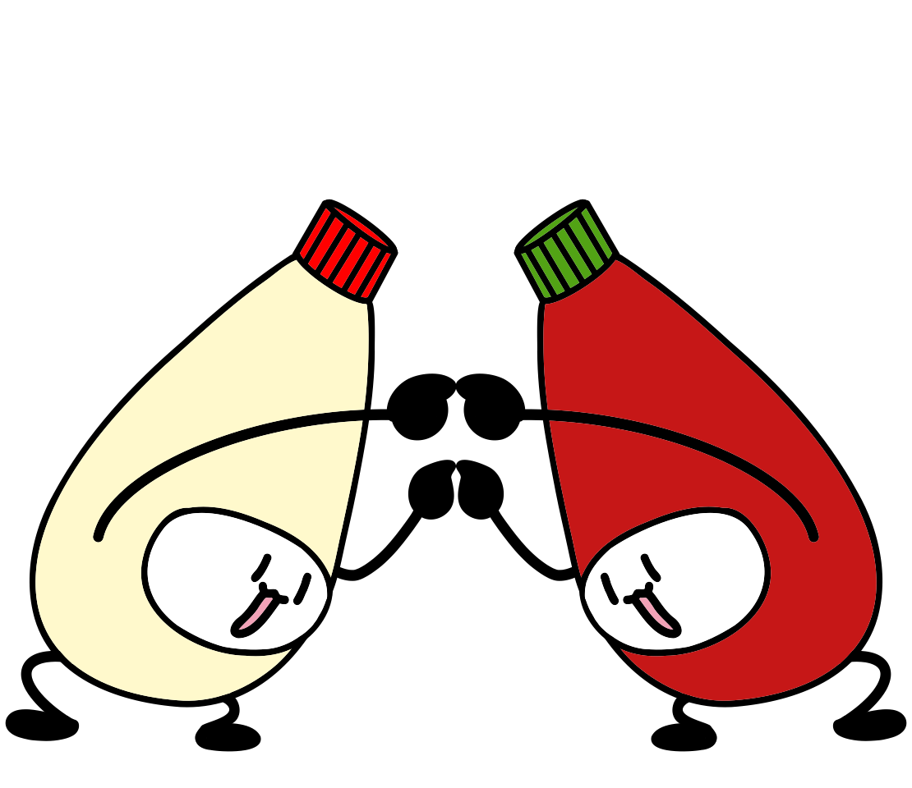
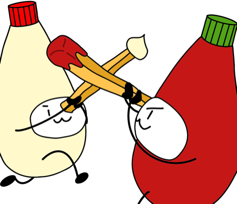

和合神社
白油之命 ・ 赤實之命
灯籠が、あなたの歩みにあわせて灯ります。
手水舎
まず、手を清めます。
水盤を押したままにしてください。
清めました。
拝殿

帳の向こうに、二柱がおられます。
闇に触れるたび、灯が一つ献じられます。
0 灯
参拝の作法
二振二拍一垂
- 一神器を二たび振り
- 二二たび拍ち
- 三一たび垂らす
神器を左右に振ってください。
神託
二つの道
当社には、古くより二つの道がある。

皿の上で永く争った。
いずれかを選んでください。
—— もっとも、当社の御祭神は二柱である。
賽銭箱
五円を投じると、御縁が生ずる。
御朱印
和合神社
—
- 来社
- 0 度
- 参拝
- 0 度
- 献灯
- 0 灯
- 道
- —
- 初参
- —
記録はあなたの端末のなかにのみ残ります。
縁起
むかし、卓上に二つの瓶があった。
一つは白く、卵と油より成る。名を白油之命という。
一つは赤く、陽に灼かれた実より成る。名を赤實之命という。
二柱は長らく、互いを知らぬまま隣に在った。
白は白のまま、赤は赤のまま、それぞれの皿へ落ちていた。
ある夜、誰かの手が二つの瓶を同時に傾けた。
白と赤は皿の上で出会い、境を失い、
どちらでもない一つの色になった。
それは白でも赤でもなく、
また、白でも赤でもあった。
以来この地では、混ざることを畏れとともに敬い、
二柱を合わせて和合大神と称し、これを祀る。
二柱は、いまも手を離していない。